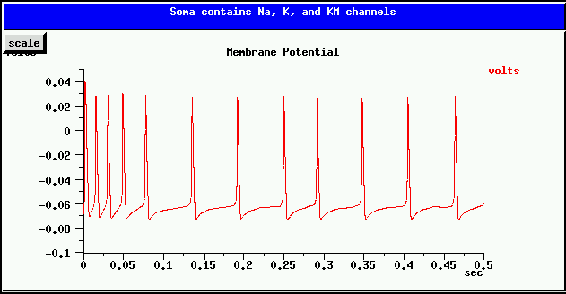

Now that we know how to make a realistic neural compartment, the next steps in creating a realistic model of a neuron are to:
The Book of GENESIS gradually builds up to the creation of a cell the "hard way" in Chapter 14 and Chapter 15, describing the element fields that need to be set and the messages that need to be established between the elements. It then describes an easier way in Chapter 16 that uses the GENESIS cell reader to perform these three steps.
This tutorial jumps ahead to create a cell "the easy way", using the cell reader. Whether you use the cell reader, or whether you constract it "the hard way" using scripting commands to set up the messages that link its elements, it is necessary to understand how messages are used in GENESIS. The detour Building a cell without the cell reader describes and illustrates the use of messages to build a similar cell "the hard way". You may read it either before or after this section of the tutorial. In particular, you should come back to it if you should find yourself uncertain about the way to properly set up a message to pass information between two GENESIS elements.
Detour: Building a cell without the cell reader - Using GENESIS messages.
Now, let's plunge ahead and create a simple neuron with the cell reader. When you have finished, return to follow the link above in order to see how these steps would be done using separate GENESIS commands. This will help you to understand what the cell reader is doing, and the messages that it sets up between the elements that make up a cell model.
In this part of the tutorial we will use the cell reader to create a simple two-compartment neuron with a dendrite compartment, a soma, and an axon. The dendrite contains synaptically activated excitatory and inhibitory channels and the soma contains voltage-activated Hodgkin-Huxley sodium and potassium channels, plus a spikegen element that acts like the intial part of an axon. This may be used to provide synaptic input to another cell.
Locate the "GENESIS Tutorials directory" that contains the GENESIS tutorials and "cd" to it in a terminal window. "ls" will show you that it contains a cells directory, which contains other directories having various GENESIS cell models. To begin, "cd" to the directory cells/simplecell and run the simplecell simulation by typing "genesis simplecell". You may vary the injection current (given in Amperes) from the default value of 0.5 nA, by editing the value in the "Injection" dialog box. NOTE: after entering a value in a GENESIS dialog box, you must hit the "Enter" key for the value to be accepted. Experiment with the simulation, and the effect of the RESET and "Overlay" toggle button after changing the injection current. Notice that the "scale" button on the graph lets you change the scales for graph axes.
Now, it's time to understand the simplecell.g script, which contains only:
//genesis - simplecell.g
/*======================================================================
A sample script to create a neuron containing channels taken from
hh_tchan.g in the neurokit prototypes library. SI units are used.
======================================================================*/
// Create a library of prototype elements to be used by the cell reader
include protodefs
float tmax = 0.5 // simulation time in sec
float dt = 0.00005 // simulation time step in sec
setclock 0 {dt} // set the simulation clock
// include the graphics functions
include graphics
//===============================
// Main Script
//===============================
readcell cell.p /cell
// make the control panel
make_control
// make the graph to display soma Vm and pass messages to the graph
make_Vmgraph
addmsg /cell/soma /data/voltage PLOT Vm *volts *red
setfield /control/Injection value 0.5e-9
set_inject /control/Injection // set initial injection from Injection dialog
check
reset
The statement "include protodefs" merges in the contents of the protodefs.g file, which is in the current (cells/simplecell) directory. This file, which we will examine shortly, creates the prototype compartment and channels, from which the cell reader will construct our cell.
The included file, graphics.g, contains the definition of the functions make_control and make_Vmgraph that are used to make the control panel and the graph for plotting the soma membrane potential Vm.
The cell is constructed with the single command
readcell cell.p /cell
which creates a neutral placeholder element /cell and builds the cell under it, according to the specifications in the cell parameter file cell.p:
// cell.p - Cell parameter file used in the simplecell tutorial // Format of file : // x,y,z,dia are in microns, all other units are SI (Meter Kilogram Sec Amp) // In polar mode 'r' is in microns, theta and phi in degrees // readcell options start with a '*' // The format for each compartment parameter line is : //name parent r theta phi d ch dens ... //in polar mode, and in cartesian mode : //name parent x y z d ch dens ... // For channels, "dens" = maximum conductance per unit area of compartment // For spike elements, "dens" is the spike threshold // Coordinate mode *relative *cartesian *asymmetric // Specifying constants *set_compt_param RM 0.33333 *set_compt_param RA 0.3 *set_compt_param CM 0.01 *set_compt_param EREST_ACT -0.07 // For the soma, use the leakage potential (-0.07 + 0.0106) for Em *set_compt_param ELEAK -0.0594 soma none 30 0 0 30 Na_hh_tchan 1200 K_hh_tchan 360 spike 0.0 // The dendrite has no H-H channels, so ELEAK = EREST_ACT *set_compt_param ELEAK -0.07 dend soma 100 0 0 2 Ex_channel 0.795775 Inh_channel 0.397888
The comments in the file give a brief description of the format of a cell parameter file, and further details are given in the documentation for readcell. The readcell options used here specify that relative cartesian coordinates will be used with asymmetric compartments. (If the option "*symmetric" had been used, then the cell would be constructed using symcompartment elements.)
This means that for lines such as
soma none 30 0 0 30 dend soma 100 0 0 2
the soma, which is the start of the cell and has no parent, has its end at the (x, y, z) coordinates of (30, 0, 0) in micrometers. As the cell starts at (0, 0, 0), this means that the soma has a length of 30 micrometers and a diameter of 30 micrometers. The "dend" section will be connected to its parent, the soma, through its own axial resistance Ra, with suitable messages established between the two compartments. As relative coordinates are being used, the end of the dendrite compartment will lie 100 micrometers along the x-axis from the end of of the soma compartment.
With the simplecell simulation running, give these commands to the genesis prompt:
showfield /cell/soma -all showfield /cell/dend -all
The "-all" option causes the compartment start (x0, y0, z0) and end (x, y, z) coordinates to be displayed, along with the length and diameter and other compartment fields. Verify that these values are what you would expect.
For a more interesting example of 9-compartment cell with branching basal dendrites, see the cell parameter file cells/corticalcells/layer5.p.
In the tutorial2.g script, the specific membrane parameters RM, CM, and RA were declared and given values. The makecompartment function was used to calculate and set the proper values of the fields Rm, Cm, and Ra using these parameters and the compartment length and diameter. Here, this is all done by the cell reader, using the values of RM, RA, and CM that were specified using the "*set_compt_param" option and the compartment coordinates and diameter. You can verify that this was correctly done, by using the showfield commands above.
tutorial2.g also defined the resting potential of the compartment EREST_ACT, but set the soma compartment Em field to a different value, "Eleak = EREST_ACT + 0.0106". Normally, we would expect to set this field, which represents the "battery" in series with the membrane resistance Rm, to the value of EREST_ACT. However, Hodgin and Huxley found it necessary to set Em to a leakage potential Eleak that compensates for current flow through other channels (such as chloride channels) which were not explicitly taken into account in their model. Eleak is set to a value that results in no net current flow when the cell is at EREST_ACT. The cell reader takes care of this by not only setting EREST_ACT to the value specified in the cell parameter file, but allowing the use of another parameter ELEAK, which if specified, gives an alternate value Em, but allows Vm to be initialized to EREST_ACT on reset, instead of Em. (For further details of the initializaton of Vm on reset, see the documentation for compartment.)
Therefore, the cell parameter file above sets ELEAK to EREST_ACT + 0.0106 for the soma, but sets it to EREST_ACT for the dendrite.
Finally, note the list of channels and their conductance densities that follow the compartment coordinates and diameter. For the soma, these are the values used by Hodgkin and Huxley for the squid giant axon, with the sodium channel (Na_hh_tchan) given a maximum conductance of 1200 Siemens per square meter of surface area, and the potassium channel (K_hh_tchan) given a value of 300 S/m^2. The cell reader scales these by the surface area to set the "Gbar" fields of the channel elements, and also sets up the necessary messages between the channels and the compartment that contains them.
Although the simplecell simulation does not make use of them, the dendrite compartment has been given excitatory and inhibitory synaptically activated channels, with appropriate conductance densities. A later section of the tutorial describes how these, and the spike generator element spike that was created in the soma, can be used when this cell is connected to another in a circuit or network. (If you want a preview, take a look at the documentation for synchan, spikegen, and the GENESIS Reference Manual section on Synaptic Connections).
To see the messages that have been set up by the cell reader (plus the PLOT message established by simplecell.g), give the commands
showmsg /cell/soma showmsg /cell/dend
The remaining thing to be explained is the way that we tell the cell reader about the properties of the elements that the cell parameter file calls Na_hh_tchan, K_hh_tchan, spike, Ex_channel, and Inh_channel. If you are anxious to go on to connect cells together in a network, you can skip ahead to the section on Making synaptic connections and return to this part later. However, at some point, you will need to create these prototype channels.
The cell reader builds the cell by making copies of "prototypes" of the various elements that will be used, replacing the default values of parameter fields with values taken from the cell descriptor file. For example, when constructing a soma with several attached dendrite compartments, it will make multiple copies of a generic compartment prototype and then set the data fields in each compartment to the appropriate values. Likewise, a cell having Hodgkin-Huxley Na channels in several compartments will get these channels from copies of the single Na channel prototype, setting the value of the maximum channel conductance Gbar for each copy, making use of the specified conductance density and dimensions of the compartment that contains the channel.
The cell reader expects to find this library of prototype elements as a set of subelements of the neutral element /library. Thus, we need to write a script that will create /library and fill it with a prototype compartment, one copy of each of the different channel types we will use, and a spike generator. Although the statements that are needed to set up the prototype library could go into your main simulation script, it is customary to make a separate script for this, and to then use include to bring it into the simulation. This script is often called protodefs.g, although you may give it any name that you like in your own simulations.
At this point, examine the listing for protodefs.g.
Note the use of several statements to include the files compartments.g, hh_tchan.g, synchans.g, and protospike.g.
These files are not in the cells/simplecell directory, but are found in the genesis/Scripts/neurokit/prototypes directory. The GENESIS initialization file (.simrc in your home directory) sets the GENESIS search path (SIMPATH) to include this directory, so that these and many other files with prototype definitions can be accessed from any directory.
These files contain definitions of some global variables for channel reversal potentials and the like, plus function definitions that create create the prototype elements. For example, hh_tchan.g sets some default values for the cell resting potential EREST_ACT, the sodium reversal potential ENa, and the potassium reversal potential EK. It also declares the functions make_Na_hh_tchan and make_K_hh_tchan to make the Na and K channel elements. The protodefs.g file assigns different values to these variables after hh_tchan.g is included, but before the functions that create the prototype channels are called.
Usually the file containing the functions to create prototype channels will have some means of shifting the voltage scale for activation and time constant curves (minf and tau) by specifying a variable for the voltage offset in equations that depend on the membrane potential. Often the variable EREST_ACT is used for this purpose, as it can also represent the nominal resting potential of the cell for which the active channel models were developed. By using this as a global variable and changing it before calling the channel creation functions that are defined in the channel files, you can shift these curves. This can be very useful when you use a channel developed for one cell model in different cell.
WARNING: Note that EREST_ACT is also used in the cell parameter file to give Em and the starting Vm (initVm). And, if you include more than one file with functions to create channels, these files may set different values for EREST_ACT or the ionic reversal potentials. If this is the case, you should be careful to reset these variables to the desired values, after including the file, and before invoking the channel creation functions defined in that file.
Detour: Creating your own channel models
The file graphics.g can be used somewhat blindly, as long as you are happy with the default control panel and the graph that it creates. After including it, all you need to do is to invoke the make_control and make_Vmgraph functions and to send appropriate PLOT messages to the /data/voltage xgraph element.
It is a good idea to keep the commands that involve graphics in a separate file, as we have done here. If you should later want to modify your simulation to run without graphics, as you might want to do when making long simulation runs on another networked computer, then you only need to make small changes to to the main simulation script. This will also allow you to easily add alternate Java-based user interfaces when GENESIS 3 is available.
In future tutorials, we will build upon the simplecell model scripts to create more detailed cell models. There is also a much fancier version of this simulation in the cells/simplecell2 directory. This implements the same model neuron, but provides a fancier graphical interface with controls to allow pulsed injection current, synaptic input from spike trains, and random Poisson-distributed background synaptic activation. It also provides user-defined string variables in the main script that you can change to use with different cell models. The README file for the simplecell2 model tells more about the simulation.
If you need to modify this file for your own customized GUI, refer to the GENESIS Reference Manual section on the XODUS Graphical Interface, and the links given there for documentation for the XODUS "widgets" xbutton, xtoggle, xlabel, and xgraph. Chapter 14 of the BoG also explains some of the XODUS commands that were used to create a similar interface for tutorial3.g, and Chapter 22 gives a very detailed treatment of XODUS.
Some of the GENESIS features used in the graphics.g file, and explained in the documentation links are:
An exercise (highly recommended):
Build some more cell simulations using the graphics.g file provided here, your own modified version of simplecell.g, and with the channel prototypes and cell parameter files found in some of the subdirectories of the cells directory. The corticalcells examples are a good place to start. The traubcell subdirectory has most of what you need to construct the 1991 Traub hippocampal CA3 region pyramidal cell model. Each of these subdirectories of cells has a README file with further information.
For this, it would be best to create your own directory to which you will copy the files that you will modify for your simulation. For example, assuming that you want to create a subdirectory in your home directory called newcell and it doesn't already exist, you might do the following from within the cells subdirectory of the "GENESIS Tutorials" directory:
mkdir ~/newcell cp simplecell/* ~/newcell cp corticalcells/* ~/newcell cd ~/newcell
You can then use your favorite text editor to modify any of these files.
Another exercise:
The genesis/Scripts/neurokit/prototypes file yamadachan.g contains a function make_KM_bsg_yka to generate a Non-inactivating Muscarinic K current. This conductance was used in a model of a bullfrog stomatogastric ganglion cell, by Yamada, Koch, and Adams (Methods in Neuronal Modeling, 1st edition, Koch and Segev editors, MIT Press 1989).
This slow hyperpolarizing current is responsible for spike frequency adaption. i.e., after a current injection causes the cell to begin firing, the spiking rate decreases and reaches a steady slower rate, as in the plot shown below.

Your task is to add a KM_bsg_yka to the simplecell model. Use the same K reversal potential EK as used by the K_hh_tchan channel. Chose conductance densities that achieve a result similar to the one above, when the injection current is 0.5 nA (as with the simplecell simulation). HINT: Keep the Na_hh_tchan maximum conductance density at its original value of 1200 S/m^2, but you will need to lower the K_hh_tchan maximum conductance considerably in order to compensate for the hyperpolarization contributed by KM_bsg_yka. If either of these potassium conductances are too large, the cell will not continue to fire. It will take a careful balance between them to produce the right result.
I give up -- tell me what conductance densities to use.
Next, we will learn how to add synaptically activated channels and make synaptic connections, in order to build networks. At some point, you may want to come back and follow the
Detour: Making more realistic cell models
But, let's now move on to the next tutorial section so that we can get started on modeling neural circuits and networks.
Digression: Building a cell without the cell reader - Using GENESIS messages